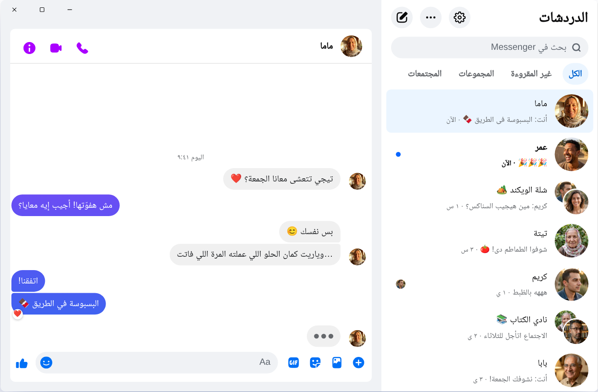

Chatpane / Windows
آخر تحديث: نوفمبر 2026
كيف تستخدم ماسنجر على الكمبيوتر في 2026
أوقفت Meta تطبيق ماسنجر لنظام Windows في 15 ديسمبر 2025، وصار messenger.com يحوّلك إلى Facebook. إليك ما يعمل اليوم على كمبيوتر أو لابتوب بنظام Windows 10 أو 11.
مجاني ومفتوح المصدر · Windows 10 و11 · ليس تطبيقًا من Meta
الإجابة المختصرة
لم يعد هناك تطبيق رسمي لماسنجر (Messenger) على الكمبيوتر. حذفته Meta من Microsoft Store، ومنذ أبريل 2026 لا يعمل ماسنجر على الكمبيوتر إلا عبر facebook.com/messages، داخل Facebook.
إذا أردت ماسنجر في نافذة خاصة به، بلا الخلاصة ولا Reels، فإن Chatpane تطبيق مجاني ومفتوح المصدر لنظام Windows يفتح محادثاتك فقط. وهو مشروع مستقل، وليس من Meta.
لماذا لم تعد شروحات «تحميل ماسنجر للكمبيوتر» تنفع؟
ما زالت مواقع تحميل البرامج، العربية منها والأجنبية مثل Softonic، تعرض ملف تثبيت Messenger 2250.1 بعناوين تحمل سنة 2026، وما زالت شروحات كثيرة تطلب منك البحث عن ماسنجر في Microsoft Store. هذا لم يعد يجدي: الملف هو نفسه التطبيق الذي أوقفته Meta في ديسمبر 2025، وعند فتحه يحوّلك إلى Facebook فقط.
ولا تكتب كلمة مرور Facebook في برنامج أو صفحة لا تعرف مصدرها. إذا عرض عليك أحد «ماسنجر للكمبيوتر» بشاشة تسجيل دخول خاصة به، فاحذر.
ماذا حدث لماسنجر على Windows؟
في 2024 استبدلت Meta تطبيق Windows بنسخة ويب مغلّفة في شكل تطبيق. وفي أكتوبر 2025 أعلنت إيقافه وحذفته من Microsoft Store، ثم توقف عن العمل في 15 ديسمبر 2025. وفي أبريل 2026 أُغلق messenger.com أيضًا. التفاصيل والتواريخ في صفحة ماذا حدث لماسنجر على الكمبيوتر.
خياراتك
طرق استخدام ماسنجر على Windows
Chatpane على Windows
يفتح Chatpane ماسنجر نفسه الذي تراه في المتصفح، فمحادثاتك ومجموعاتك ومكالماتك وصورك كلها موجودة ومتزامنة مع هاتفك. ما يحذفه هو باقي Facebook.
- ماسنجر فقط. الخلاصة وReels وMarketplace والبحث في Facebook كلها مخفية.
- إشعارات مفيدة. ردّ أو تفاعل أو ضع علامة كمقروءة أو اكتم المحادثة من الإشعار نفسه، دون فتح النافذة. مفيد إن كنت تبيع عبر صفحتك أو Marketplace وتردّ على الزبائن من الكمبيوتر.
- شريط المهام ومنطقة الإعلامات. عدد الرسائل غير المقروءة على الأيقونة، والتشغيل مع بدء Windows، وخيار البقاء في منطقة الإعلامات عند إغلاق النافذة.
- الخصوصية. أخفِ حالة الكتابة، وأخفِ الأسماء والصور عند مشاركة الشاشة، واحجب طلبات التحليلات التي يرسلها Facebook (مفعّل افتراضيًا).
- بالعربية. يتبع Chatpane لغة جهازك، فتظهر قوائمه وإعداداته بالعربية. وإن كان Windows لديك بالإنجليزية أو الفرنسية، فاختر العربية من إعدادات Chatpane (Settings ← General ← Language).

طريقة التثبيت
- نزّل مثبّت Windows. إذا كان جهازك يعمل بمعالج ARM، فاستخدم مثبّت ARM64.
- افتح الملف. مثبّتات Chatpane لنظام Windows غير موقّعة رقميًا بعد، لذلك قد تعرض SmartScreen رسالة بأن Windows قام بحماية جهازك. انقر على «مزيد من المعلومات» (More info) ثم «تشغيل على أي حال» (Run anyway). ولا تنزّل Chatpane إلا من chatpane.app أو GitHub.
- سجّل الدخول بحساب Facebook المعتاد. ستظهر محادثاتك فورًا.
لا تريد تثبيت أي شيء؟ النسخة المحمولة (.zip) تعمل بلا مثبّت ولا تحتاج إلى صلاحيات المسؤول، فتناسب كمبيوتر العمل أيضًا.
الأسئلة الشائعة
أسئلة عن ماسنجر على الكمبيوتر
هل Chatpane مجاني؟
نعم. بلا سعر ولا اشتراك ولا إعلانات. وهو مفتوح المصدر بترخيص MIT، وشيفرته منشورة على GitHub ليراجعها أي شخص.
هل هو تطبيق ماسنجر الرسمي؟
لا. Chatpane مشروع مستقل لا علاقة له بـ Meta. يعرض ماسنجر الحقيقي من facebook.com/messages في نافذة خاصة، فرسائلك تمر عبر ماسنجر كالمعتاد وتسري عليها شروط Meta.
هل يعمل بدون حساب Facebook؟
لا. منذ أبريل 2026 لا تسمح Meta باستخدام ماسنجر بدون حساب Facebook إلا في تطبيق الهاتف. على الكمبيوتر، يحتاج Chatpane وأي خيار آخر إلى حساب يستطيع الدخول إلى facebook.com.
هل يعمل على Windows 10؟
نعم، على Windows 10 و11. يستخدم Chatpane مكوّن Microsoft Edge WebView2 الموجود أصلًا في Windows 11، وعلى Windows 10 ينزّله المثبّت إذا لم يكن موجودًا.
هل أستطيع إجراء مكالمات فيديو؟
نعم. إنه ماسنجر الكامل، فالمكالمات الصوتية ومكالمات الفيديو تُفتح في نافذة خاصة بها، تمامًا كما في facebook.com.
احصل على Chatpane
مجاني ومفتوح المصدر. يُنزَّل في ثوانٍ - حجمه حوالي 4 MB فقط.
القائمة الكاملة مع المجاميع الاختبارية موجودة على
GitHub
- أو brew install --cask kristofferR/tap/chatpane